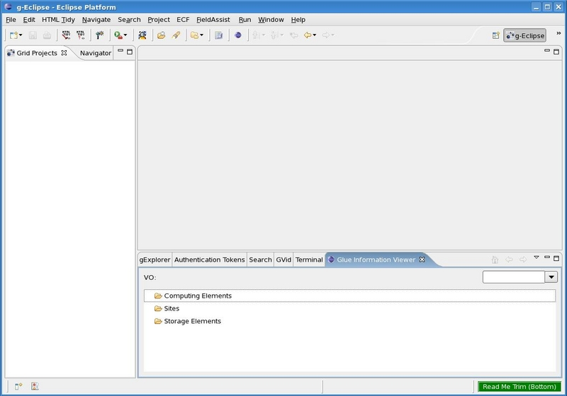
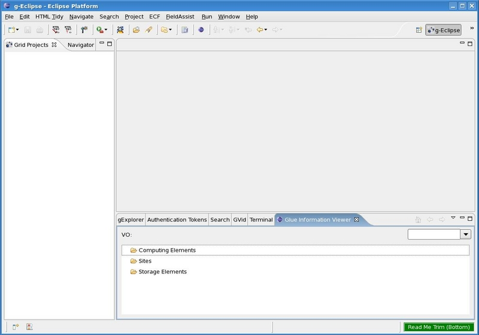
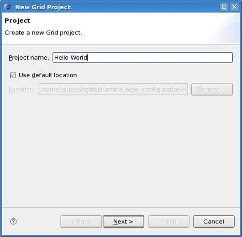
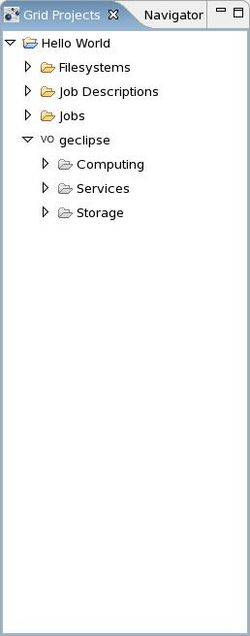

Grid Project view.
Grid Project view.
Figure 1: A screenshot of the empty g-Eclipse perspective
Your Desktop might look like the image in figure 1. Once you complete the
steps described here the leftmost pane (figure 6) will contain a tree-view of your
created project called the
Grid Project view.

Figure 1: A screenshot of the empty g-Eclipse perspective
"Right Click" into that view and select
New > Grid Project to launch the New Grid Project Wizard,
which is shown in figure 2. This wizard will help you create your first
g-Eclipse project.

Figure 2: A New Grid Project Wizard
On the first page of the New Grid-Project Wizard, specify the name you want your grid project to be called and the location where you want to store it's settings on your local harddisk. For the location you may accept the default settings. Then click the Next button to get to the following page, shown in figure 3.
This page asks you to specify your Virtual Organization (VO).
Select your VO from the list and click the Next button.
If you have no VO available in the list, you can create a new one by clicking on
the New VO button, selecting the type of VO and clicking Next.

Figure 4: Attributes for creating a new Virtual Organization
As figure 4 shows, for a new VO you are asked to provide the following information:
the name for your VO, host, port, host DN,
information system endpoint, and the VO server URL.


Figure 6: New Grid Project tree in the panel view
It will contain three subfolders